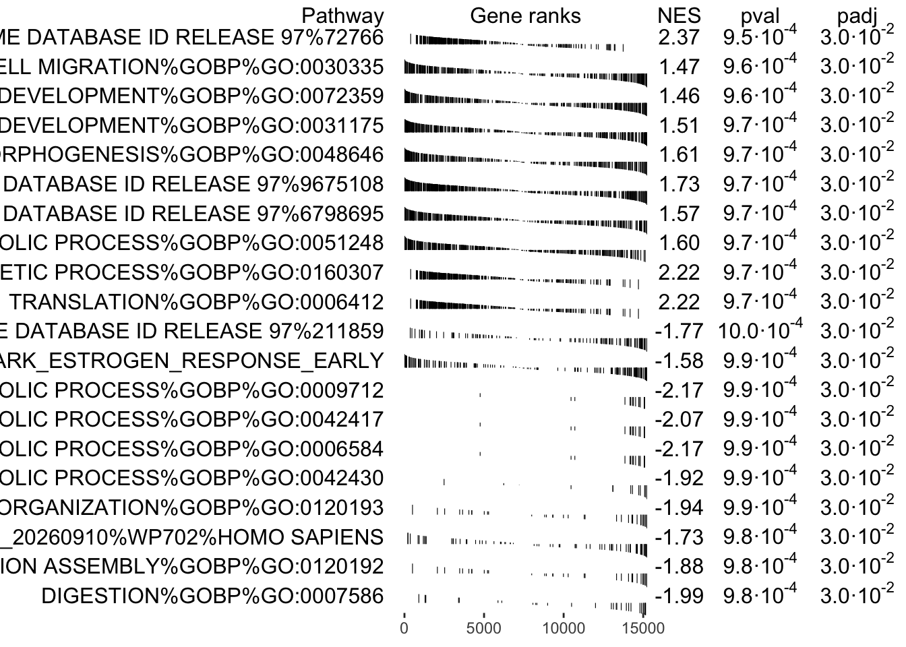
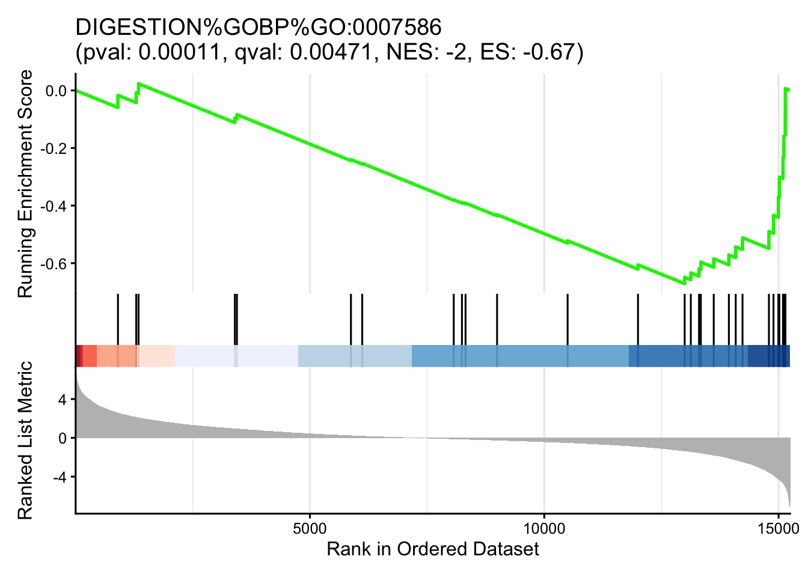
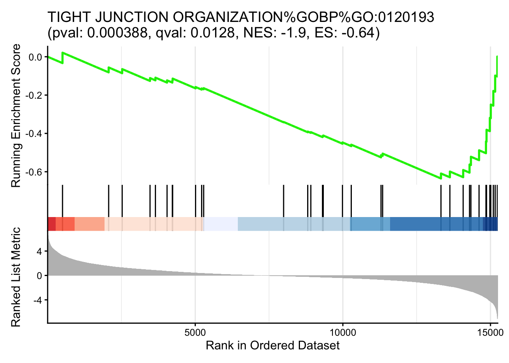
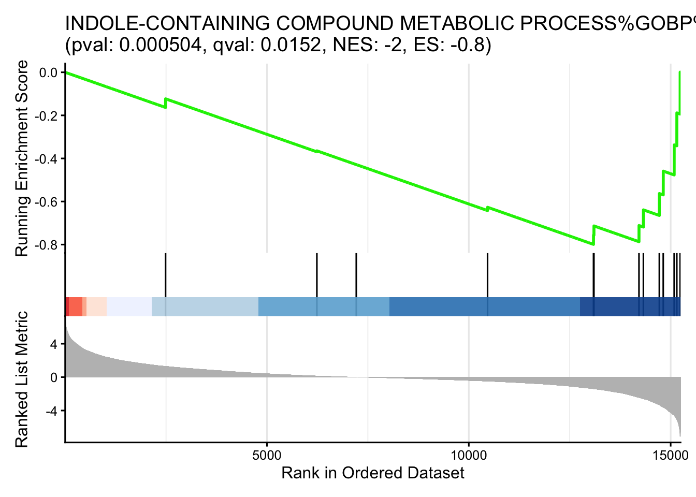
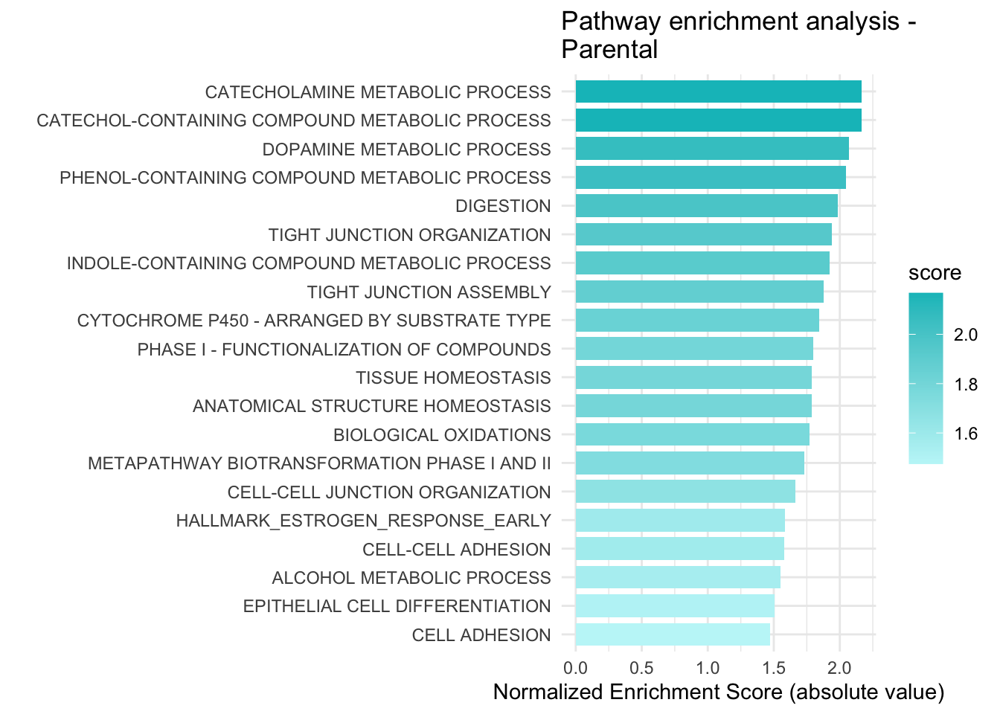
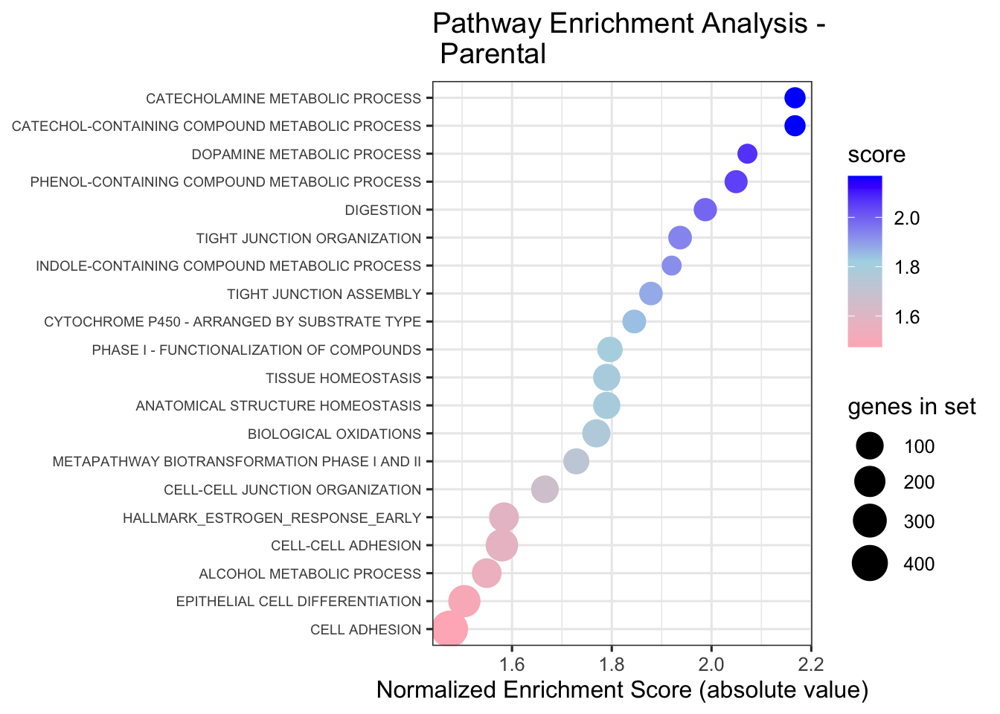
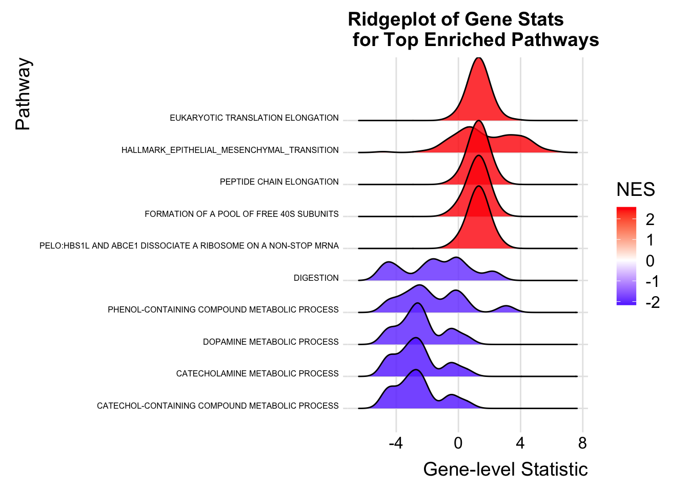

Ranked gene list
This work is licensed under a Creative Commons Attribution-ShareAlike 4.0 Unported License. This means that you are able to copy, share and modify the work, as long as the result is distributed under the same license.
Authors: Veronique Voisin, Ruth Isserlin
Presenter: Veronique Voisin
0.14 Introduction
This practical lab contains one exercise. It uses fGSEA to perform a gene-set enrichment analysis.
0.16 Data
We will perform gene-set enrichment analysis using the output of the differential expression analysis comparing the palbo-resistant and the MCF7 parental cell line. We won’t use only the signficant differentially expressed genes but we will rank all genes from top up-regulated to down-regulated. The non significant genes stays in the rank file.
0.17 Background
The goal of this lab is to:
- Upload the 2 required files into GSEA,
- Adjust relevant parameters,
- Run fGSEA,
- Open and explore the gene-set enrichment results.
The 2 required files are:
- a rank file (.rnk)
- a pathway definition file (.gmt).
0.17.0.1 Rank File
To generate a rank file (.rnk), a score (-log10(pvalue) * sign(logFC)) was calculated from the edgeR differential expression results. A gene that is significantly differentially expressed (i.e associated with a very small pvalue, close to 0) will be assigned a high score.
The sign of the logFC indicates if the gene has an expression which is higher in Palbo-resistant (logFC > 0, the score will have a + sign) or higher in Parental (logFC < 0, the score will have a - sign). It is used to rank the genes from top up-regulated to top down-regulated (all genes have to be included).
0.18 Exercise 1 - prepare the gene lists
This exercise requires the file “edgeR_resistant_vs_parental_all_genes.csv” located in the data folder.
0.18.1 Step 1 - Install and Load libraries
# CRAN and Bioconductor setup
if (!requireNamespace("BiocManager", quietly = TRUE))
install.packages("BiocManager")
# List of CRAN packages
cran_packages <- c(
"tidyverse",
"knitr",
"kableExtra",
"glue",
"ggridges",
"data.table"
)
# List of Bioconductor packages
bioc_packages <- c(
"fgsea",
"clusterProfiler",
"enrichplot"
)
# Install CRAN packages if not already installed
for (pkg in cran_packages) {
if (!requireNamespace(pkg, quietly = TRUE)) {
install.packages(pkg)
}
}
# Install Bioconductor packages if not already installed
for (pkg in bioc_packages) {
if (!requireNamespace(pkg, quietly = TRUE)) {
BiocManager::install(pkg)
}
}
# Load the libraries
library(tidyverse)
library(knitr)
library(kableExtra)
library(glue)
library(ggridges)
library(data.table)
# Bioconductor packages
library(fgsea)
library(clusterProfiler)
library(enrichplot)
# create the results folder (if it does not exist yet) to save the outputs
dir.create("results", showWarnings = FALSE)
In the Ubuntu (course server) session, the dir.create()
line above and every write.csv() line in this lab use
~/workspace/Module8/results instead of
results, so your results are saved in
~/workspace/Module8/results.
0.18.2 Step 2 - Prepare the rank file , upload the gmt file and run fgsea
fGSEA is an R package that runs a fast Gene Set Enrichment Analysis.
In the below command the following options have been specified:
- pathways - list of genesets to use for the calculation
- stats - genes and their associated statistic, sorted ( rank file)
- max_size - maximum size for individual gene sets.
- min_size - minimum size for individual gene sets
- gseaParam - GSEA parameter value
gseaParam - GSEA parameter value. All ranks will be raised to this power when calculating the ES scores. Equivalent to the weight in the original GSEA algorithm.
res = read.csv("data/edgeR_resistant_vs_parental_all_genes.csv")
gmtfile = "data/Human_GOBP_AllPathways_noPFOCR_no_GO_iea_September_14_2026_symbol.gmt"
pathways <- fgsea::gmtPathways(gmtfile)
## rank file formatted for gsea
ranks <- setNames(res$score, res$gene)
ranks <- ranks[!is.na(ranks) & !is.na(names(ranks))]
ranks <- sort(ranks, decreasing = TRUE)
set.seed(543) ## to get reproducible results
## running fgsea
fgseaRes <- fgsea(
pathways = pathways,
stats = ranks,
minSize = 10,
maxSize = 500,
nperm = 2000
)## Warning in fgsea(pathways = pathways, stats = ranks, minSize = 10, maxSize =
## 500, : You are trying to run fgseaSimple. It is recommended to use
## fgseaMultilevel. To run fgseaMultilevel, you need to remove the nperm argument
## in the fgsea function call.## Warning in preparePathwaysAndStats(pathways, stats, minSize, maxSize, gseaParam, : There are ties in the preranked stats (0.01% of the list).
## The order of those tied genes will be arbitrary, which may produce unexpected results.Save the full fgsea results table to the results folder.
#the leadingEdge column is a list of genes for each pathway,
#convert it to text (genes separated by a comma) so that it can be written to a csv file.
fgseaRes_to_save <- copy(fgseaRes)
fgseaRes_to_save$leadingEdge <- sapply(fgseaRes_to_save$leadingEdge, paste, collapse = ",")
write.csv(fgseaRes_to_save, "results/fgsea_results_resistant_vs_parental.csv", row.names = FALSE)
Set gseaParam to 2 if you want to add more weight on
the most top up-regulated and top down-regulated.
2 is a more stringent parameter and it will result in
less gene-sets significant under FDR <0.05.
0.18.3 Step 3 - Examine the results
Examining the results
Get the top results and visualize as table
topPathwaysUp <- fgseaRes[ES > 0][head(order(pval), n=10), pathway]
topPathwaysDown <- fgseaRes[ES < 0][head(order(pval), n=10), pathway]
topPathways <- c(topPathwaysUp, rev(topPathwaysDown))
plotGseaTable(pathways[topPathways], ranks, fgseaRes, gseaParam=0.5)## Warning: Using `size` aesthetic for lines was deprecated in ggplot2 3.4.0.
## ℹ Please use `linewidth` instead.
## ℹ The deprecated feature was likely used in the fgsea package.
## Please report the issue at <https://github.com/ctlab/fgsea/issues>.
## This warning is displayed once per session.
## Call `lifecycle::last_lifecycle_warnings()` to see where this warning was
## generated.
When examining the results there are a few things to look for:
Check the number of gene-sets that have been used for the analysis.
A small number (a few hundred genesets if using baderlab genesets) could indicate an issue with identifier mapping.
Check the number of sets that have FDR less than 0.25 – in order to determine what thresholds to start with when creating the enrichment map. It is not uncommon to see a thousand gene sets pass the threshold of FDR less than 0.25. FDR less than 0.25 is a very lax threshold and for robust data we can set thresholds of FDR less than 0.05 or lower.
Number of pathways with corrected pvalue < 0.05
## [1] 325Number of pathways with corrected pvalue < 0.01
## [1] 0Number of Palbo-resistant (up -regulated) pathways with corrected pvalue < 0.05
## [1] 297Number of Parental (down -regulated) pathways with corrected pvalue < 0.05
## [1] 280.18.4 Step 4 - Explore the tabular format of the results
0.18.4.1 Palbo-resistant (up-regulated genes)
topPathwaysUp <- fgseaRes[ES > 0][head(order(pval), n=5), pathway]
top_palbo_hits <- fgseaRes[which(fgseaRes$pathway %in% topPathwaysUp),]
#format the pathway name colum so that it is easier to see the whole table
top_palbo_hits$pathway <- substr(top_palbo_hits$pathway, start = 1, stop=35)
kable(head(top_palbo_hits), caption = "Top Palbo-resistant pathways") %>%
kable_styling(bootstrap_options = c("striped", "condensed"), font_size = 10)| pathway | pval | padj | ES | NES | nMoreExtreme | size | leadingEdge |
|---|---|---|---|---|---|---|---|
| TRANSLATION%REACTOME DATABASE ID RE | 0.0009524 | 0.0297521 | 0.5492338 | 2.367385 | 0 | 338 | EEF1A2, …. |
| POSITIVE REGULATION OF CELL MIGRATI | 0.0009615 | 0.0297521 | 0.3432083 | 1.470604 | 0 | 324 | CAV1, SE…. |
| NEURON PROJECTION DEVELOPMENT%GOBP% | 0.0009671 | 0.0297521 | 0.3491315 | 1.507575 | 0 | 355 | ADGRB1, …. |
| CIRCULATORY SYSTEM DEVELOPMENT%GOBP | 0.0009615 | 0.0297521 | 0.3364868 | 1.456819 | 0 | 361 | CAV1, SE…. |
| ANATOMICAL STRUCTURE FORMATION INVO | 0.0009690 | 0.0297521 | 0.3734786 | 1.610248 | 0 | 345 | COL6A1, …. |
0.18.4.2 Parental (down-regulated genes)
topPathwaysDown <- fgseaRes[ES < 0][head(order(pval), n=5), pathway]
top_parental_hits <- fgseaRes[which(fgseaRes$pathway %in% topPathwaysDown),]
#format the pathway name colum so that it is easier to see the whole table
top_parental_hits$pathway <- substr(top_parental_hits$pathway, start = 1, stop=35)
kable(head(top_parental_hits), caption = "Top Parental pathways") %>%
kable_styling(bootstrap_options = c("striped", "condensed"), font_size = 10)| pathway | pval | padj | ES | NES | nMoreExtreme | size | leadingEdge |
|---|---|---|---|---|---|---|---|
| METAPATHWAY BIOTRANSFORMATION PHASE | 0.0009843 | 0.0297521 | -0.4964078 | -1.728867 | 0 | 68 | CYP2J2, …. |
| TIGHT JUNCTION ORGANIZATION%GOBP%GO | 0.0009872 | 0.0297521 | -0.6351792 | -1.936928 | 0 | 33 | GRHL2, M…. |
| INDOLE-CONTAINING COMPOUND METABOLI | 0.0009881 | 0.0297521 | -0.7990183 | -1.920113 | 0 | 13 | KYNU, QP…. |
| DIGESTION%GOBP%GO:0007586 | 0.0009804 | 0.0297521 | -0.6713524 | -1.987560 | 0 | 29 | AKR1C2, …. |
| TIGHT JUNCTION ASSEMBLY%GOBP%GO:012 | 0.0009833 | 0.0297521 | -0.6194630 | -1.878603 | 0 | 32 | GRHL2, M…. |
0.18.5 Step 5 - Visualize the top results
Visualize the top results as different sorts of plots, as demonstrated in the first part of the lab.
0.18.5.1 GSEA style Enrichment Plots
In order to create GSEA Enrichment plots we need to use the packages:
clusterProfiler runs with its own set of pathways that it parses from GO or KEGG or MSigDB or other sources that are coded into the package. It does not take as input the standard GMT file. If you want to use your own pathway definitions you need to translate it into a dataframe where for every gene in a given pathway there is a row with the pathway name and the gene.
In order to generate an enrichment plot with enrichplot we need the fgsea results in the datastructure returned by clusterProfiler. To run fGSEA in this way we need:
- the ranks file, as before
- the pathways as a data frame.
Below we show how to run fGSEA using the clusterProfiler package and user supplied pathway definitions.
#translate our gmt file (a named list of genesets) into a dataframe
#with one row per gene in each pathway.
TERMS <- data.frame(
name = rep(names(pathways), lengths(pathways)),
gene = unlist(pathways, use.names = FALSE)
)
# specify the gene ranks, and make sure it is in descending order.
gsea_scores <- ranks
gsea_scores <- gsea_scores[!is.na(gsea_scores)]
gsea_scores <- sort(gsea_scores, decreasing = TRUE)
# Set a seed for reproducibility
set.seed(123)
#Run fgsea using clusterProfiler, with the same gene-set size limits as above.
selected_gsea <- clusterProfiler::GSEA(
geneList = gsea_scores,
TERM2GENE = TERMS,
minGSSize = 10,
maxGSSize = 500,
pvalueCutoff = 1,
verbose = FALSE,
pAdjustMethod = "fdr",
scoreType = "std",
eps = 0
)## Warning in preparePathwaysAndStats(pathways, stats, minSize, maxSize, gseaParam, : There are ties in the preranked stats (0.01% of the list).
## The order of those tied genes will be arbitrary, which may produce unexpected results.Print out a few of the top enrichment plots
all_figures <- list()
#generate GSEA plots for the top Parental (down-regulated) genesets that we have already seen in the table above
rows_to_use <- which(selected_gsea@result$ID %in% topPathwaysDown)
for(i in seq_along(rows_to_use)){
row_number = rows_to_use[i]
#format the title for the enrichment plot
pw_des <- selected_gsea@result$Description[row_number]
pw_pval <- selected_gsea@result$pvalue[row_number]
pw_pval <- format(pw_pval, scientific = F, digits = 3)
pw_qval <- selected_gsea@result$p.adjust[row_number]
pw_qval <- format(pw_qval, scientific = F, digits = 3)
pw_nes <- selected_gsea@result$NES[row_number]
pw_nes <- format(pw_nes, scientific = F, digits = 2)
pw_es <- selected_gsea@result$enrichmentScore[row_number]
pw_es <- format(pw_es, scientific = F, digits = 2)
mytitle <- glue::glue('{pw_des}\n(pval: {pw_pval}, qval: {pw_qval}, NES: {pw_nes}, ES: {pw_es})')
figure <- enrichplot::gseaplot2(
selected_gsea,
geneSetID = selected_gsea@result$ID[row_number],
title = mytitle,
color = "green2",
base_size = 12,
rel_heights = c(1.5, 0.5, 1),
subplots = 1:3,
pvalue_table = F,
ES_geom = "line"
)
all_figures[[i]] <- figure
}## Warning: `aes_()` was deprecated in ggplot2 3.0.0.
## ℹ Please use tidy evaluation idioms with `aes()`
## ℹ The deprecated feature was likely used in the enrichplot package.
## Please report the issue at
## <https://github.com/GuangchuangYu/enrichplot/issues>.
## This warning is displayed once per session.
## Call `lifecycle::last_lifecycle_warnings()` to see where this warning was
## generated.


0.18.5.2 Bar plots
- top pathways associated with Parental
topPathwaysDown <- fgseaRes[ES < 0][head(order(pval), n=20), pathway]
enrichment_results_topdown <- fgseaRes[which(fgseaRes$pathway %in% topPathwaysDown),]
#change the name to be just the first part of the name
enrichment_results_topdown$pathway <- unlist(lapply(enrichment_results_topdown$pathway, FUN=function(x){unlist(strsplit(x,split = "%"))[1]}))
#make sure that names are unique after shortening them (the same name can come from different databases)
enrichment_results_topdown$pathway <- make.unique(enrichment_results_topdown$pathway)
##Calculate a score: the absolute value of the NES.
##(the pvalues of the top pathways are all very close to each other, so the NES is more informative here)
enrichment_results_topdown$score = abs(enrichment_results_topdown$NES)
enrichmentTidy <- enrichment_results_topdown %>%
as_tibble() %>%
arrange(desc(score)) %>%
slice_head(n = 20)
p = ggplot(enrichmentTidy, aes(reorder(pathway, score), score)) +
geom_col(aes(fill = score), width=0.8) +
scale_fill_gradient(low = "#C1F6F8", high = "#00BFC4")+
coord_flip() +
labs(x="", y="Normalized Enrichment Score (absolute value)",
title="Pathway enrichment analysis - \nParental") +
theme_minimal()
p
0.18.5.3 Dot plot
- top pathways associated with Parental
p = ggplot(enrichment_results_topdown, aes(
y = fct_reorder(pathway, score),
x = score,
color = score,
size = size
)) +
geom_point() +
scale_color_gradientn(
colours = c("lightpink", "lightblue", "blue"),
guide = guide_colorbar(reverse = FALSE, order = 1)
) +
scale_size_continuous(range = c(4, 8), name = "genes in set") +
theme_bw(base_size = 12) +
xlab("Normalized Enrichment Score (absolute value)") +
ylab(NULL) +
ggtitle("Pathway Enrichment Analysis - \n Parental") +
theme(
axis.text.y = element_text(size = 7)
)
p
0.18.5.4 Ridge plots
- top pathways associated with either class
# Filter significant pathways (adjusted p-value < 0.05) and take
# the top 5 for each class (highest positive NES and most negative NES)
significant_pathways <- fgseaRes[padj < 0.05]
topPathways <- rbind(
head(significant_pathways[NES > 0][order(-NES)], 5),
head(significant_pathways[NES < 0][order(NES)], 5)
)
# Create a data.frame for plotting with the gene ranks for each of the top pathways
ridge_data <- rbindlist(lapply(topPathways$pathway, function(pw) {
genes <- pathways[[pw]]
data.frame(
gene = genes,
stat = ranks[genes],
pathway = pw
)
}))
# get NES for each of the top pathways
nes_map <- setNames(topPathways$NES, topPathways$pathway)
# Add NES values to ridge_data
ridge_data$NES <- nes_map[ridge_data$pathway]
#change the name to be just the first part of the name (because the actual names are too long)
#and make sure that names are unique after shortening them
short_names <- make.unique(unlist(lapply(topPathways$pathway, FUN=function(x){unlist(strsplit(x,split = "%"))[1]})))
names(short_names) <- topPathways$pathway
ridge_data$pathway <- short_names[ridge_data$pathway]
#get rid of na values for genes found in the gene set but not ranked in our dataset.
ridge_data <- ridge_data[!is.na(ridge_data$stat),]
ggplot(ridge_data, aes(x = stat, y = reorder(pathway, NES), fill = NES)) +
geom_density_ridges(scale = 2, alpha = 0.8) +
scale_fill_gradient2(
low = "blue", mid = "white", high = "red", midpoint = 0,
name = "NES"
) +
theme_ridges() +
theme(legend.position = "right",axis.text.y = element_text(size = 6)) +
labs(
title = "Ridgeplot of Gene Stats\n for Top Enriched Pathways",
x = "Gene-level Statistic",
y = "Pathway"
)